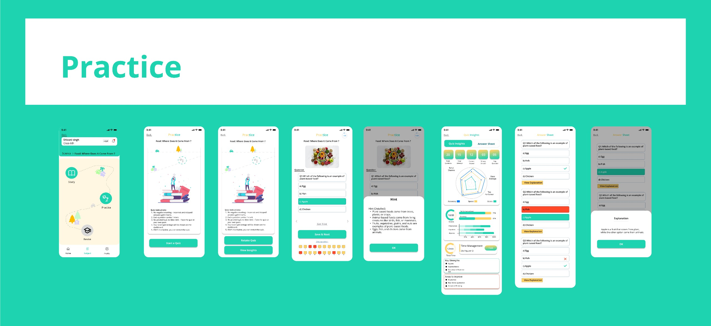

Krutsha is an educational mobile application with AI-based features.
This is an individual project that I made during my Internship period.
The Challange
Designing Krutsha involved several UI/UX challenges, including creating a child-friendly and intuitive interface with simple navigation, large touch-friendly elements, and engaging visuals. Maintaining a clear visual hierarchy while balancing text, images, and interactions was crucial to enhance usability. Gamification elements like rewards and animations were integrated to improve engagement, while accessibility considerations ensured support for different learning styles. Additionally, optimizing performance for smooth interactions and refining the design through user testing and feedback helped in delivering an effective and enjoyable experience for young learners.
The Solution
To overcome these challenges, I designed a simple and intuitive UI with large touch-friendly elements, clear visual hierarchy, and an engaging color scheme suitable for children. Gamification was integrated to enhance engagement, while accessibility-focused design ensured inclusivity for different learning styles. Performance optimization techniques, along with user testing and iterative improvements, helped refine the experience, making Krutsha both interactive and effective for young learners.
Objective
The objective of Krutsha is to ensure that students can easily access the app while studying. Whenever they have any doubts, they can resolve them instantly using the SolveX feature. The app focuses on providing a seamless user experience with high usability, enabling students to learn and practice effectively. Through quizzes, they can reinforce their knowledge and memorize concepts efficiently. The Revise feature helps them strengthen weak areas. The overall goal is to ensure that users can complete their journey in minimal steps, making the learning process smooth and effective.
Introduction
Onboarding Screen
The onboarding flow includes login options via phone number, password, or log in with Google and same for signup, ensuring a seamless experience. The phone number-based login is prioritized to make sign-up and login easy for users. Since our target audience is students from class 6 to 12, the flow is designed to be simple and user-friendly, keeping their needs in mind.
Main Features
After having interviewed many different users, I came to the following conclusions:
1 - Study: Structured Learning with AI-Powered Assistance.
The Study section is designed to facilitate an efficient and comprehensive learning experience. It integrates multiple tools that cater to different aspects of studying:
SolveX (AI Assistant): This feature functions as an intelligent AI companion that provides real-time answers to students' queries, simplifying complex concepts and guiding them step-by-step. It enhances comprehension by breaking down difficult topics into digestible explanations.
Jhatpat Notes: A quick and seamless note-making tool that allows students to jot down important points, key concepts, and personalized summaries. This feature ensures easy access to crucial information for future reference.
Memorise: A retention-focused tool that employs scientifically proven techniques such as spaced repetition, mnemonic strategies, and recall-based exercises to help students remember key facts, definitions, and formulas effectively.
Skim Learning (Flashcard-Based Learning): A dynamic learning method where students can review essential concepts through interactive flashcards, enabling them to grasp information quickly and efficiently. This feature encourages active recall and self-paced revision.
2. Practice: Engaging and Interactive Skill Reinforcement
The Practice section is designed to test students' understanding and reinforce their knowledge through well-structured assessments. It includes:
Quizzes with Explanations & Hints : A diverse range of quizzes catering to different learning levels and subjects. Each quiz provides immediate feedback with explanations and hints, ensuring that students understand not only the correct answers but also the reasoning behind them. This interactiv
3. Revise: Personalized Weakness Analysis & Adaptive Questioning
The Revise section focuses on personalized learning by identifying areas where students struggle the most and helping them improve through targeted revision strategies. It comprises:
Weak Area Analysis: An intelligent system that tracks students' performance across different topics, highlighting weak areas based on quiz results and study patterns. This feature provides insights into learning progress and suggests areas that need improvement.
Question Generation Based on Weak Areas: The system dynamically generates practice questions tailored to the student's weak topics. These questions help in reinforcing concepts and ensuring mastery over difficult subjects.
Outcome
This educational mobile app empowers students with a structured, AI-driven learning experience, enhancing their understanding, retention, and problem-solving skills. By integrating real-time AI assistance (SolveX), interactive note-making (Jhatpat Notes), retention-based tools (Memorise, Skim Learning), and adaptive quizzes, the app ensures an engaging and effective study process. The Practice section reinforces learning through quizzes with explanations, while the Revise module personalizes revision by identifying weak areas and generating targeted questions
Certificate
If you have any question I am available. Let's talk about UX/UI . Feel free to add me on linkedin https://www.linkedin.com/in/shivani-singh-8a5ba9343/